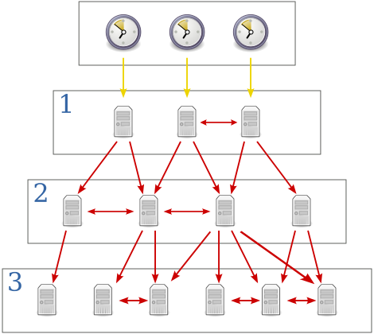

LPIC-1 2014 Cursus
108.1 Bijhouden van de systeem tijd
Trainer: Dion Dresschers
Assistent Trainer: Younes Idrissi
Licentie: CC BY-SA (Dion Dresschers & Younes Idrissi)
Versie: 2014-11-16-00


LPIC-1 | Section 108.1 | Page 1/31
108.1
Bijhouden van de systeem tijd
- /usr/share/zoneinfo
- /etc/timezone
- /etc/localtime
- date
- hwclock
- pool.ntp.org
- ntpd
- /etc/ntp.conf
LPIC-1 | Section 108.1 | Page 2/31
/usr/share/zoneinfo
- De '/usr/share/zoneinfo/' is een directory met binaire tijdzone files.
- Een van deze files wordt gekozen als standaard tijdzone.
- Voor meer informatie zie '107.3 Localisation and internationalisation'
LPIC-1 | Section 108.1 | Page 3/31
/usr/share/zoneinfo
tree /usr/share/zoneinfo
LPIC-1 | Section 108.1 | Page 4/31
 demo 1
demo 1/etc/timezone
- De file '/etc/timzone' laat zien wat de default tijdzone is van het systeem (wel in Debian, niet in RedHat).
- Normaliter is het een tekstfile van een regel met de tijdzone daarin bv. 'Europe/Amsterdam'
- Voor meer informatie zie '107.3 Localisation and internationalisation'
LPIC-1 | Section 108.1 | Page 6/31
/etc/timezone
cat /etc/timezone
LPIC-1 | Section 108.1 | Page 7/31
/etc/localtime
- De file '/etc/localtime' is een symbolic link (bij RedHat) of een copy van een binaire zonefile (Debian) in '/usr/share/zoneinfo' om de locale tijd weer te geven
- Voor meer informatie zie '107.3 Localisation and internationalisation'
LPIC-1 | Section 108.1 | Page 9/31
/etc/localtime
ls -l /etc/localtime
LPIC-1 | Section 108.1 | Page 10/31
date
- Een computer heeft een component die de tijd bijhoudt en die gevoed word door een batterij als de computer uit staat.
- Bij het opstarten van Linux wordt deze klok eenmalig geraadpleegd om de tijd te weten.
- Deze interne klok is de zogenaamde hardware clock
- Het commando 'date' laat de tijd (en datum) zien die de software heeft bijgehouden.
- Je kan de output zelf formatteren via bv: 'date +%Y-%m-%d\ %H:%M:%S' (zie 'man date')
- Voor meer informatie zie '107.3 Localisation and internationalisation'
LPIC-1 | Section 108.1 | Page 12/31
date
date
LPIC-1 | Section 108.1 | Page 13/31
hwclock
- Nadat het systeem opgestart is wordt de hardwareclock in principe niet meer geraadpleegd.
- Je kan de hardwareclock wel nog uitlezen.
- Ook kan je de hardwareclock syschronizeren met de softwareclock en vice versa
- Je kan tijd aanpassen met bv. 'hwclock --set --date="02/24/2020 14:00"'
- De optie '-s' stelt de softwaretijd in op basis van de hwclock
- De optie '-w' zet de hardwareclock in op basis van de softwaretijd
- Optie '-c' (compare) vergelijkt het tijdsverschil tussen de softwareclock en de hardware clock.
LPIC-1 | Section 108.1 | Page 15/31
hwclock
sudo hwclock
LPIC-1 | Section 108.1 | Page 16/31
pool.ntp.org
- http://pool.ntp.org is een groep van servers die de atoomtijd weergeven via het NTP protocol
- NTP is het standaard protocol voor Windows en Linux om de tijd te synchroniseren. Het maakt gebruik UDP (van de TCP/IP stack) en van poortnummer 123.
- De atoomtijd wordt via radiogolven uitgezonden. Linux machines kunnen hier niet direct mee synchoniseren (want de tijd wordt niet via NTP uitgezonden). Deze bron heet 'stratum 0'
- Er zijn servers die deze tijd wel kunnen opvangen en deze zijn zelf ingericht als NTP servers, deze zijn 'stratum 1'. De server die daar weer mee synchroniseren zijn 'stratum 2' enz.
LPIC-1 | Section 108.1 | Page 18/31
pool.ntp.org

LPIC-1 | Section 108.1 | Page 19/31
pool.ntp.org
- Je kan en mag je tijd kostenloos synchroniseren met pool.ntp.org. Je kan zelfs participeren bij deze organisatie.
- Je kan je eigen server synchroniseren met '0.pool.ntp.org', met daaronder '1.pool.ntp.org', ''2.pool.ntp.org', '3.pool.ntp.org' als backup's.
- Omdat de pool overal in de wereld kan staan is het beter om een lokale pool te zoeken via http://pool.ntp.org (bv. '0.nl.pool.ntp.org').
- De '0' in de pool moet je echter niet verwarren met 'stratum 0'
LPIC-1 | Section 108.1 | Page 20/31
ntpdate
- Via ntpdate, kan je (eenmalig) de tijd synchroniseren met een NTP server
- Als je dit regelmatig wilt doen, dan kan je dit ook via de 'ntpd' (NTP Daemon) doen.
- ntpdate geeft ook de verschillen weer van je locale tijd met de tijd van de NTP server
LPIC-1 | Section 108.1 | Page 21/31
ntpdate
ntpdate 0.nl.pool.ntp.org
LPIC-1 | Section 108.1 | Page 22/31
ntpd
- De NTPD is de daemon dat ervoor zorgt dat de tijd gesynchroniseerd wordt.
- De linux server waar deze NTPD draait kan een client zijn of een server worden.
- Deze installeer je door 'yum install ntp' of met 'apt-get install ntp'
- De configuratiefile hiervoor is '/etc/ntp.conf'
LPIC-1 | Section 108.1 | Page 24/31
ntpd
yum install ntp
LPIC-1 | Section 108.1 | Page 25/31
/etc/ntp.conf
- De config file voor ntpd is '/etc/ntp.conf'
- De NTP servers naar wie je wilt luisteren geef je aan bij 'server' dus bv 'server 0.nl.pool.ntp.org'
- Je ziet vaak 'iburst' achter bovenstaan commando, dat betekend dat er 8 packetjes gestuurd worden naar de NTP server als deze niet reageert.
- Wil je een server maken dan geef je de netwerken aan die je toegang wilt geven bij 'restrict' dus bv: 'restrict 192.168.1.0 mask 255.255.255.0' om het netwerk 192.168.1.0/24 toegang te geven.
LPIC-1 | Section 108.1 | Page 27/31
/etc/ntp.conf
cat /etc/ntp.conf
LPIC-1 | Section 108.1 | Page 28/31
Vraag 1
To see the current time set by a NTP clock, you use the command:
- ntpd -cloc
- ndtime
- hwdate
- ntpdate
LPIC-1 | Section 108.1 | Page 30/31
Vraag 2
Fill in the blank:
The ________ file is the configuration file for ntpd
LPIC-1 | Section 108.1 | Page 31/31